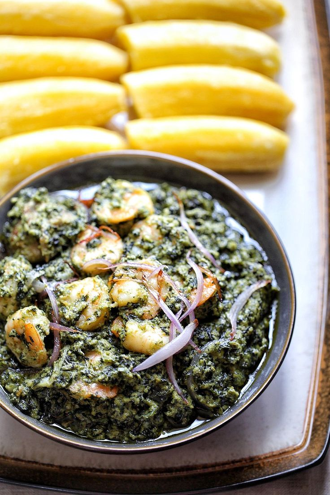

Recipe on how to cook Achu and Yellow soup

Ingredients for Achu
- cocoyam
- Achu babana
- Banana leaves
- Water as needed
Ingredients for Yellow soup
- Palm oil
- Salt
- Canda
- Fresh meat/smoked meat
- lime stone(Kanwa)
- Achu spices
- Water as needed
Ingrediences for achu side
- Vergitables
- Egusi
- pepper
Preparation
- Watch and boild cocoyam/achu banana
- Peel the cocoyam/achu banana while still hot
- Mash or pound the cocoyam separately with the banana
- Mix the pounded cocoyams and banana
- Wrap it in a banana leave
yellow soup
- Boild the fresh meat/smoked meat
- Add salt, canda and maggi
- Add Worm palm oil
- Mix the palm oil, limestone,achu spices
- Add water as needed
For more directions click!!
https://youtu.be/hFvWN_ibqKMRecipe on how to cook fufu and njam njam
- Corn flour
- Water
- wooden stick for turning
ingredients for achu
Ingrediences to cook njam njama
- Fresh njam njama
- tomatoes
- vergitable oil or palm oil
- pepper
- Maggi
- Salt
- Onion
- Water as needed
Ingfredience to cook khati khati
- whole chicken- plucked and slightly burnt over a flame preferably
- palm oil
- garlic
- salt
- maggi
- onion
Preparation
- Boild water in a pot
- Mix ½ cup corn flour with 1 cup of cool water in a bowl
- Add the mixture to boild water and keep stirring continuously to avoid lumps for a while.
- Set aside 2 cups of boiled water
- Add the remaining flour and keep stirring continuously
- Stir untill it's smooth and add hot water if it gets too thick
- cover and let it cook for about 10 minutes
- Shape and wrap in banana leaves, foil, or plastic wrap to keep warm.
Njam njam
- Wash and cut the njam njam into pieces
- Boild the njam njam with salt
- Fry the tomatoes, pepper and onion
- Add maggi
- Add the boilded njam njam
Click here for more!!
https://youtu.be/8moQx0lZy8Y?list=TLPQMjcwODIwMjVgnQb5eIqjCwRecipe to prepare water fufu and eru

Ingrediences to prepare water fufu
- Water fufu powder
- Water
- wooden stick
Ingrediences to prepare eru
- Eru leaves
- Water leaves
- Smoked fish
- Crayfish
- fresh meat/smoked meal
- Canda
- palm oil
- Salt
- Maggi
- pepper
- Water
Preparation
- mix the water fufu without water until you fill its ok and put water inside
- Put it on fire for a while and stir with a wooden stick
- if its ready you wrap it and keep in a flast
eru
- Wash the eru leaves and water leaves
- Boild the fresh meat/smoked meat with salt and maggi
- Pour the water leave in the pot of meat and let it boil for a while
- Pour the eru in the pot together with others spices
- Mix the red oilg in the pot as well
For more direction click!!
https://youtu.be/jbzzRkww8usRecipe on how to prepare plantain and ndole

Ingrediences to prepare plantain
- Ripe plantain/Unripe plantian
- Water
Ingrediences to prepare ndole
- Ndole leaves
- Groundnut
- Vergitable oil
- Meat/ stock fish
- Crayfish
- fresh meat/chicken
- Salt
- Maggi
- pepper
- Water
Preparation
- Peel plantains
- Boild till tenderwith salt added to it
Ndole
- Boild your meat/stock fish
- Boild and blend groundnuts
- Add blended groundnuts to meat/fish
- Blend garlic and onions into a groundnuts and stir it.
- Add ground crayfish and simmer for 10–15 minutes, stirring frequently
- Wash bitterleaf thoroughly to reduce bitterness
- Stir into the pot and simmer until well incorporated.
- Add sliced onions in to the ndole and stir
For more direction click!!
https://youtu.be/9gkCCMZL1bkRecipe to prepare ekwang
Ingrediences to prepare ekwang
- Gratered cocoyam
- Water
- coco leaves
- palm oil
- fresh meat/smoked meat
- Crayfish
- Salt
- Maggi
- pepper
Preparation
- Peel cocoyams and grate them into a smooth paste
- Add a pinch of salt and mix well.
- Watch and tear cocoyam leaves in to smaller pieces for wrapping
- Wrap grathered cocoyams and put in to a pot
- Add smoked fish, beef, crayfish, onions, garlic, ginger, country onions, and bush pepper
- Pour in palm oil generously
- Add water
- Simmer on low heat for 1–2 hours.
- Avoid stirring with a spoon—shake the pot gently to prevent unwrapping.
- Add water as needed to prevent burning and ensure even cooking.
For more direction click!!
https://youtu.be/9qZI1TluVscRecipe on how to prepare plantain and koki
Ingrediences to prepare plantain
- Ripe plantain/Unripe plantian
- Water
Ingrediences to prepare koki
- koki beans beans
- Red palm oil
- Salt
- Maggi
- pepper
- Water
- coco leaves
- plantian leaves
Preparation
- Soack the koki beans in water and peel off the skin
- Blend the peeled beans with water and chili peppers into a coarse paste.
- Warm the palm oil slightly (don’t bleach it) and mix it into the bean paste.
- Mix in a multa with salt added to it
- Use banana leaves or foil to wrap the mixture into bundles.
- Place in a pot with water and steam for 1.5 to 2 hours.
For more direction click!!
https://youtu.be/CuXMcsMiqOQRecipe on how to prepare plantain and beans

Ingrediences to prepare plantain
- Ripe plantain/Unripe plantian
- Water
Ingrediences to prepare beans
- Beans
- Salt
- Maggi
- pepper
- Water
- palm oil
- Canda
- Bonga
Preparation
- Soak beans overnight.
- Boil with onions and spices
- Add palm oil and simmer until thick.
For more direction click!!
https://youtu.be/FLk-fh4HGDkRecipe on how to cook bongo tchobi

ingredients to cook Bongo
- Large fish
- Mbongo spicies
- Njansa
- Tomatoes
- Onoin
- Ginger
- Galics
- Leeks
- White pepper
- Vergitable oil
- Salt
Preparation
- Clean and cut the fish into steaks
- Season lightly with salt and pepper.
- Blend tomatoes, garlic, ginger, onions, leeks, celery, njansang, and mbongo spice into a smooth paste.
- Add pepper if desired
- Add the blended spice mix and cook until it thickens and darkens.
- Stir frequently to avoid burning.
- Gently place the fish in to the pot
- Leave it to cook until the fish is ready
For more direction click!!
https://youtu.be/OX2vt9SJuZIRecipe on how to prepare kokicorn

Ingredients to cook kokicorn
- Fresh corn
- Palm oil
- cocoyam leaves
- pepper
- salt
- maggi
Preparation
- Grate the corn into a bowl
- Add salt, maggi and pepper
- Add palm oil and mix well
- Wrap in cocoyam leaves
- Boild for 30 minutes or an hour
For more direction click!!
https://youtu.be/04pUdzO8dYERecipe on how to prepare turning coco

Ingredients to cook turning coco
- Cocoyam
- palm oil
- bitterleaves
- smoked meat(dry meat)
- salt
- maggi
Preparation
- Peel and wash cocoyams
- Watch bitterleave to reduce bitterness
- Add smoked fish, dried meat, or bush meat to the pot
- Add salt and maggi
- Pour in water and let it steam for a while
- Stir gently to aviod breaking of cocoyams
- Pour in palm oil generously for color and flavour
- Cook until every thing is well combined and the oil float to the top
- Let it cook for about 30-45 minutes
For more direction click!!
https://youtu.be/4gGnC6bG_TIRecipe on how to prepare sanga

Ingredients to prepare sanga
- Fresh corn
- Cassava leaves
- Palm oil
- Maggi
- Salt
Preparation
- Wash and pound the cssava leaves untill soft
- If using frozen or pre-chopped leaves, rinse thoroughly to remove bitterness
- Add cassava leaves, corn, palm cream, and water to a large pot.
- Stir well to combine.
- Cook on medium heat for 1 to 1.5 hours.
- Stir occasionally to prevent sticking.
- Add more water if needed to maintain a stew-like consistency
- Add salt or sugar depending on your preference
For more direction click!!
https://youtu.be/QJiZgw6ZNAc